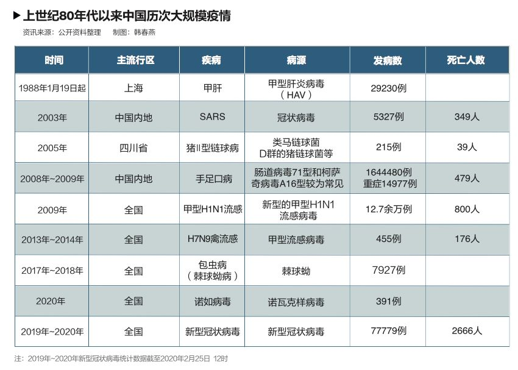
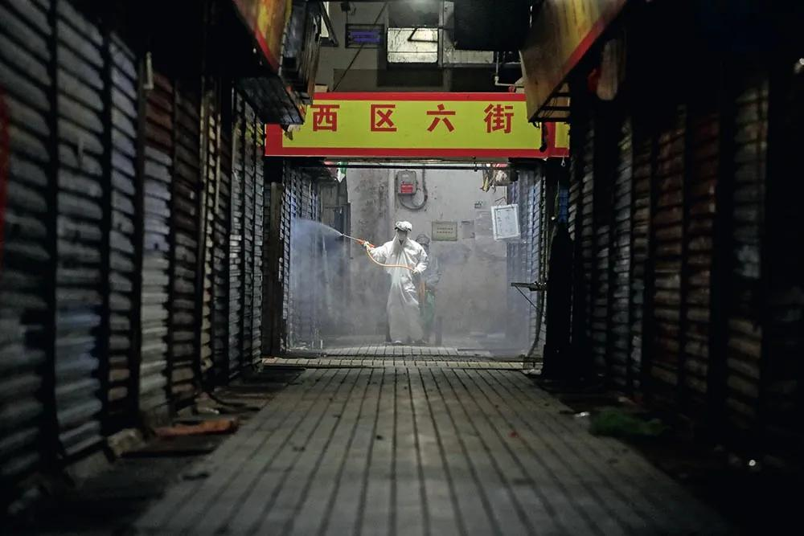
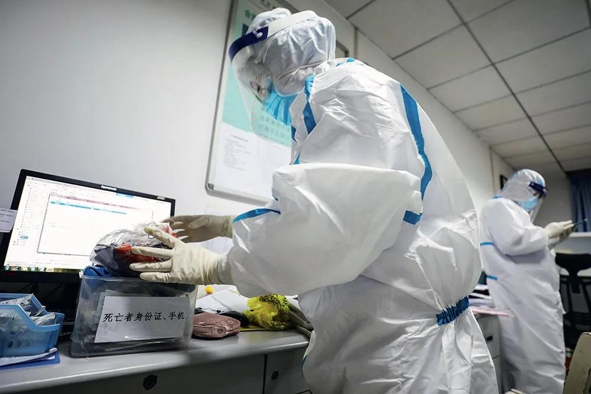

资讯详情
原文链接 备份链接 4139 来源：正和岛 作者：叶青 02-25正在打榜，当前第1 1、武汉累计死亡2043人 24日，全国新增确诊病例508例，新增死亡病例71例（湖北68例，山东2例，广东1例），新增疑似病例530例。 当日新增治愈 …
原标题：复盘疫情决策：医生、疾控、科研、行政分别做了什么
2月6日下午，一辆运送医疗设备和工作人员的车辆抵达武汉火神山医院。摄影/长江日报 陈卓
1月8日晚，作为中国疾病预防控制中心（CDC）首席流行病学家，曾光突然接到国家卫健委通知，要求他尽快去一趟武汉。次日早上7点，他就坐上了从北京飞往武汉的飞机。
因在武汉只待了一天，曾光没有参与现场调查。在地方给包括他在内的专家的汇报中，他听到的是武汉市已经隔离了多少人，密切接触者中没有出现感染者，感染者病症不是太重，和季节性流感差不多……“我们得到的都是这样的信息。”在向《中国新闻周刊》回忆起那次经历时，曾光拍着桌子问，“那时我哪知道还有个李文亮，还有张继先？”
即便是基于这样的信息，出于SARS时期的经验，曾光还是建议当地要把感染者完全隔离，疑似病人不但要收治进医院，还要一人一个单间，密切接触者要集中隔离，这是防控要点。但在当时，武汉并没有采纳这样的措施。
距曾光的武汉之行一个半月之后，新型冠状病毒肺炎疫情已呈蔓延全球之势。
2月23日，中科院院士、上海交通大学医学院院长陈国强、副院长江帆等人在《中国科学：生命科学》杂志发表了评述文章《新型冠状病毒感染疫情下的思考》。文章指出，值得肯定的是, 此次疫情发生后, 科技工作者快速分离出新型冠状病毒，并公布其基因序列，研发诊断试剂盒, 并及时向世界公布，获得了包括WHO在内的国内外各方的好评。在疫情关键时期， 国家和各级地方政府有力应对，并及时听取专家意见，果断采取措施，防止疫情输入、扩散和传播。但是，我们必须反思疫情初期的应对策略。
曾光说，流行病学是疾病预防控制的基本专业支持，它主要包括疾病监测、疫情报告、现场调查，以及公共卫生决策。曾光把流行病学看作一门“情报工作”。但现在，他感到专业人士与决策者之间的沟通渠道还不通畅，公共卫生信息难以转化为及时、有效的决策。多位专家指出，回溯此次疫情，尤其是早期阶段，在监测、锁定传染源等环节，在具体操作层面上还有许多可提升的空间。
在曾光去武汉的时候，国家卫健委还派出了第二批专家组于1月8日抵汉，在当地调查指导防疫工作，直到1月15日。一位专家组成员向《中国新闻周刊》透露说，当时，当地提供给专家组的资料有限，很难判断出病毒有没有人传人的能力。他回忆说，1月11日，湖北省与武汉市两级卫健委在与国家卫健委专家组召开会议时，还曾提供了一份人数有100多人的疑似病例名单。专家组曾一致建议，两级卫健委应向社会公布疑似病例情况。但在12日，武汉市卫健委的通报只重复了前日通报过的41例确诊病例，并未公布疑似病例情况。对此，他们也很意外。
临床医生被感染，是疾病人传人的敏感信号。据后来的媒体报道，1月1日至11日，武汉已有7名医务人员感染。其中，武汉同济医院医生陆俊于1月7日就确诊了新冠肺炎，在1月17日之前，一直在本院治疗。上述专家直言，当时，他们也走访了武汉同济，却没有人向他们提及该院医务人员的感染情况。
中科院院士陈国强等人撰文指出，此次疫情发生早期, 临床医生从个案诊治中已经感觉到问题的严重性及人传人的可能性，但是却没有一支专业高效的公共卫生队伍能够在第一时间深入现场，进行细致、缜密的流行病学调查和及时确诊问题。
很多人都在质疑“非典”之后建立的覆盖全国的传染病直报系统为何没有发挥作用。对此，江苏省预防医学会会长、原江苏省疾控中心主任、省卫生厅副厅长汪华向《中国新闻周刊》指出，“实际上，这个直报系统并不负责发现新发传染病。”
针对新发传染病，2004年12月，中国对《传染病防治法》进行了修订，在需要上报的传染病范围一项，增加了“或者发现其他传染病暴发、流行以及突发原因不明的传染病”内容。新发传染病可以通过直报系统下的子系统“突发公共卫生事件报告系统”上报。但问题是只有首先定义了什么样的情况算公共卫生事件，才能上报。对此，北京大学公共卫生学院教授、国家CDC首任主任李立明指出，修订后的《传染病防治法》对这些新发传染病只有一句话，“就是说要报告，但是怎么报告没有明确的规定。”所以，1月20日国家规定新冠病毒肺炎为“乙类传染病，按甲类管理”之后，每天就开始报告了。李立明说，“在这之前，没有定性它是一个什么病、危害性如何，需要有专家评估与卫生行政部门决策的过程。”而根据国家CDC官网消息，传染病网络直报系统对新冠肺炎作为法定传染病的动态监测功能是2020年1月24日才上线的。
陈国强等人指出，早在2011年，中国CDC与美国CDC相关专家就已经撰文，在总结 2003年SARS以来中国防控新发传染病能力建设取得的成绩的同时，更提出了中国在新发传染病侦测能力上的显著差距。

实际上，目前，在中国的疾控体系内，能监测传染病的并非只有一个直报系统。原卫生部从2004年起，要求在全国范围内开展不明原因肺炎（PUE）病例监测，这是一个单独的系统，不是由法律规定的。PUE与传染病直报系统相联，也就是说，医生可以通过PUE在直报系统中上报不明原因肺炎病例。由CDC副主任冯子健指导、2017年发表的一篇硕士毕业论文《不明原因肺炎监测系统评价》介绍说，PUE是一个依赖医疗机构临床医生上报病例的被动监测系统，临床医生对该监测系统的接受程度，直接影响病例报告质量和效率。2013年，苏皖等地暴发人感染禽流感H7N9疫情初期，绝大多数病例就是通过PUE发现的。然而，该论文指出，目前医院内有大量符合PUE定义的病例，但上报率低。
根据国家CDC、湖北省CDC等机构1月29日发表在《新英格兰医学杂志》上的文章，2019年12月29日，武汉当地医院通过PUE监测系统，发现了最早报告的4个新冠肺炎病例。但实际上，根据中国CDC的回溯性分析，以发病日统计，2019年12月31日前已经有104人感染，15人死亡。
“临床医生在接诊时发现不明原因肺炎病人，按要求本应立即报告，但实际操作中没人管。医生都很忙，上报就意味着后续一系列登记填表、调查的工作要做，这对于他们是额外的负担。”汪华说，目前，发热门诊、不明原因肺炎监测系统、流感监测系统，都是彼此独立的，因管理部门不同，分散在医疗机构的管理单项里面。
对此，多位公卫专家表示，应当合并这些分散的监测系统，建立一个统一的呼吸道疾病的监测系统，同时打通临床诊断、报告、治疗与疫情防控各个环节。比如，能否在医院的电子诊疗系统做一个改进，当医生接诊一个不明原因肺炎病人，不需要再另填表，只需在他的系统里点击按钮，这个病例就能发送到监测系统里去。
在此次疫情中，许多临床医生在早期就觉察到了异常，但由于缺乏明确的诊断，直报系统无法使用，只能层层人工上报。武汉市中心医院急诊科主任艾芬在接受《中国新闻周刊》采访时就表示，2019年12月28日，她所在的急诊科接诊了4例和华南海鲜市场有关的发热病人，在29日向医院公共卫生科作了上报。医院公共卫生科又上报给武汉市江汉区疾控中心。对方回复称，湖北省中西医结合医院与武汉市红十字会医院此前也上报了类似病例。
另据媒体报道，靠近华南海鲜市场一家叫优抚的二级医院接收了多例不明原因发热病人。1月10日左右，尽管医院将集中发热的情况报告给上级疾控部门，但对方并未马上来医院进行调研。对此，香港中文大学流行病学荣休教授唐金陵就指出，应当重视一线临床医生的判断。在未来改进监测系统时，应当考虑把临床医生的观察与判断纳入进去。
对于临床医生和疾控专家在疫情发生早期相互沟通、协作的关系，李立明以美国为例介绍说，美国每个医院的急诊科里面都配有CDC专家，他们的任务，就是在急诊室随时发现新的异常病例，建立起一种敏感度很高的疫情监测系统。疾控专家与临床医生一起工作，这才叫真正的医防结合。
陈国强等人指出，在3～4周防控初期的“误判”，在很大程度上降低了公众甚至是医务工作者的警觉和防护意识，进而加大了后阶段疫情防控的难度。他们认为，在疫情发生的萌芽阶段，地方政府在面对可能威胁人民群众生命安全和身体健康的重大传染病, 尤其是未知传染病疫情时应该及时倾听和回应专家意见, 并合理合情地向公众报告, 赋予公众知情权，既防止造成恐慌，也强化公众的警觉和自我防护意识。与此同时，国家卫生部门和疾病防疫部门应该在“内部知情期”就制定科学合理的防控预案，既要有最好的预期，也要做最坏的打算。
“宁可错杀一千，也不漏掉一个”
“当觉察到异常以后，接下来要对疾病有正确的判断。新发疾病早期不要等待诊断方法，可以根据症状判断，有异常就应及时采取社会行动。”复旦大学公共卫生学院原院长、流行病学教授姜庆五说。
据财新报道，1月4日，武汉市卫健委给当地医生的一次培训中，下发了《不明原因的病毒性肺炎诊疗方案（试行）》和《不明原因的病毒性肺炎入排标准》。其中，前者由卫健委第一批专家组与湖北当地专家组共同制定，而《入排标准》则由武汉市卫健委编制。
相比之下，武汉市卫健委编制的《入排标准》对于确诊条件更加严格，须同时具备临床表征与流行病学史，即有华南海鲜市场的接触史。但此后多个回溯性研究均表明，过分强调“华南海鲜市场接触史”的流行病学特征，会漏掉许多病例。比如，据武汉金银潭医院副院长黄朝林等人在《柳叶刀》上发表的论文，该院最初收治的41例不明原因肺炎病例中，有14例没有华南海鲜市场接触史。国家CDC主任高福等人1月29日在《新英格兰医学杂志》上发表的文章也显示，在1月1日前发病的病例中，仅55％与华南海鲜市场相关。

2月22日，工作人员给封闭中的武汉华南海鲜市场进行消毒。摄影/解放日报 赖鑫琳
对此，武汉金银潭医院院长张定宇告诉《中国新闻周刊》，疫情早期，专家都会把华南海鲜市场接触史作为流行病学意义上很重要的依据，“没有谁敢单凭一张CT片，或者一个血常规，就说这是什么病。现在放射科医生，只要拿到CT片，加上病人的症状，比如咳嗽比较多，咳痰比较少，都敢拍胸脯说就是新冠肺炎。”多位专家也指出，新冠疫情暴发的时间，正好是流感及非典型性肺炎的流行季，也是很多呼吸道传染病高发的季节，这些因素都使得鉴别诊断一个新的呼吸道传染病变得更加困难。
但李立明指出，病例筛选的标准严格，好处是抓得更准一些，但其实这样做是很危险的。“为了发现和控制传染源，‘宁可错杀一千，也不漏掉一个’是原则，所以要强调诊断方法的灵敏度要高一些，临床诊断标准可能应该宽一点，以保证不漏掉任何一个可疑的传染源”。
国家CDC副主任冯子健后来也对媒体承认，因为偏向更精准的病例锁定，对疫情判断有保守的倾向。“这个过程中面临的困难是没有诊断试剂，当有了检测试剂之后，早期迹象也表明，刚开始用时，试剂对上呼吸道、下呼吸道标本阳性检出率比较低，我们不敢轻易排除掉。受这种早期的限制，我们下结论就非常谨慎。”
疫情发生一个多月以来，《新冠肺炎诊疗方案》前前后后已经修订过5次，出了6个版本，因为确定了病原体的存在，这些方案都要求新冠肺炎的确诊条件之一为病原体检测结果阳性。
复旦大学公卫教授胡善联指出，需要通过核酸检测确诊病人，初期核酸检测试剂盒不足，对疫情防控造成了一定延误。“部分疑似病人最终应该是确诊的病人，由于检测试剂供应不够，很多疑似病人没有及时确诊，也造成了一定的传播。”
陈国强等人也指出，疫情暴发后，因流程尚不清晰，出现了符合资质的医疗机构迟迟无法获得检测资质，大量疑似病人积压给临床工作带来巨大压力，而疾控部门由于短时间研发生产的检测试剂质量“良莠不齐”，样本采集标准化程度不高等问题难以将检测权限下放。在这个过程中，双方的沟通与协商机制在早期不够健全，影响病毒感染者的早期筛查和确诊，成为延误诊断的“堰塞湖”。
核酸检测的另一个大问题是“假阴性”高，即使对于已确诊的病人阳性率也只有30％～50％。因此，第五版《诊疗方案》对湖北省内的疑似病例不做流行病学史要求，并将肺部CT表现视为“临床诊断”类别。诊断标准调整后，2月12日，湖北新冠肺炎病例激增了14840例，其中含临床诊断病例13332例。
第五版诊断又回到了最初的临床诊断。对此，姜庆五表示，“果断地采取措施非常重要。一个新发传染病不一定要等待病原清楚、诊断方法建立。还好我们现在有先进技术，如果放到十几年前，这样的情况根本不可思议。”
香港中文大学流行病学荣休教授唐金陵也指出，和上次SARS一样，媒体上传播的消息，使公众和决策者认为，分离病毒以及研制检测方法、治疗方法和疫苗等工作是首要的工作。“我认为这是完全错误的，是本末倒置的做法。这些研究固然重要，但是对于控制迫在眉睫的传染病，根本就来不及。”
他还举例说，上次的SARS疫情就不是靠发现病毒来控制住的，至今也没有有效的治疗办法，疫苗至今还是遥遥无期。成功控制SARS最终靠的是传统的检疫、隔离、消毒、通风、个人防护等卫生措施。如果SARS期间我们更早、更大地让卫生和疾控发挥作用，可能传播的范围会小得多，死的人会少得多，医护人员的保护会好得多。

2月18日深夜，工作中的武汉急救中心120调度员陈蕾。新冠肺炎疫情发生以来，武汉市急救中心工作量剧增，陈蕾每天晚8点至早8点工作不停歇。她的一个愿望是“等疫情结束，我要好好睡个觉！”摄影/长江日报 陈亮
“如果决策者缺乏专业知识，
专业人士的建议可能也是徒劳”
2019年12月31日，国家卫健委第一批专家组抵达武汉。这一天，中国CDC应急中心主任李群与同事们也赶到武汉，分三组对武汉金银潭医院的89例收治病人全部进行了调查。他们的工作包括病例监测、流行病学调查、密切接触者管理等。据CDC官网信息，“随着大量认真细致的调查分析，相关调查研究和风险评估报告陆续提供到决策部门手中。”
CDC的流行病学调查结果如何，以及这些风险评估报告对决策部门起到什么作用，这些情况至今仍不得而知。姜庆五说，从结果来看，当时，没有看到有流行病学或公共卫生学专家出来发声，病原学以外的事情没有刻画出来，比如只看到华南海鲜市场，但是当时有一部分病人并非从海鲜市场获得感染。
中疾控传染病预防控制所病毒学家、复旦大学上海市公共卫生临床中心兼职教授张永振领导的团队于2019年12月26日收到来自武汉的不明原因发热患者标本一份。1月5日上午，他们从标本中检测出一种新型冠状病毒，获得了该病毒的全基因组序列。上海公卫临床中心在同日向国家卫健委提交了一份病原学调查报告。报告指出：鉴于该病毒与造成SARS疫情的冠状病毒同源，应是经呼吸道传播，建议在公共场所采取相应的防控措施以及在临床救治中采用抗病毒治疗。
但这份报告似乎并未起到什么作用。从第二天，即1月6日开始，到1月10日，武汉市卫健委均未作疫情通报。与此形成对照的是，早至1月4日，香港特区政府便对不明原因肺炎启动了“严重”级别应变，尽管当时该地怀疑病例只有7例。
“是公共卫生系统出问题了。”曾光告诉《中国新闻周刊》，“不是流行学调查没调查好，也不是病毒不该研究，也不是不该发论文。这些信息都报上去了，怎么及时转化成防控行动？现在的新冠疫情防控，还不是一个应急的战时体制，就像打仗，有情报部、参谋部、司令部，情报信息迅速到参谋部去研判，参谋部给出建议以后，司令部马上就拍板，应该是这么一个体制。”
美国加州大学洛杉矶分校公共卫生学院副院长、流行病学资深终身教授张作风回忆说，2003年SARS的成功防治，得益于当时有很多流行病学专家和疾控专家献计献策。
然而，一位疾控专家认为，社会仍未从过去的教训中总结经验。SARS期间，作为防控顾问，他能直接参与研判，得出的结论或者建议很快地转化为防控行动。而现在，省疾控中心的调查结果要向省卫生厅报告，市、区、县疾控向各级卫健委报告，卫生行政部门要向政府报告。“经过一层一层上报，效率就没了，而且真正报上去的信息可能也走样了。”
陈国强等人则指出，地区决策者是公共卫生事件中的指挥主体，需要第一时间组织专家团队提供决策建议。武汉作为国内临床医疗、公共卫生及病毒研究最豪华的专业阵容所在地，此次专业团队在当地政府早期疫情判断及应对决策过程中的作用似乎没有得到最大发挥, 是需要深入思考与反省的。
曾光说，如果决策者缺乏专业知识，专业人士的建议可能也是徒劳。此次各地因新冠抗疫不力被问责或者免职的卫健系统官员，大多不具备医疗或者卫生管理专业背景。姜庆五表示，“很多地方的卫健委，一把手、二把手都没有医学背景，也没有公共卫生教育背景，这是我很吃惊的，因为这是一个需要强有力的专业知识支撑的岗位。湖北疫情早期的各种问题，都与这种‘不是专业的人却在做专业的事’的现象有一定关系。”
李立明强调，基本的公卫知识和观念非常重要。“呼吸道传染病，怎么可能不出现人传人？只是时间早晚的问题，不应该出现‘有限的人传人’这种说法。如果全社会都有一些基本共识，早期防控不应该是这样。”
1月19日，曾光与中国工程院院士钟南山等人一起，以国家卫健委高级别专家组成员的身份再赴武汉。1月20日晚，钟南山在与央视的直播连线中，肯定了新型冠状病毒存在人传人的现象，并称有14名医务人员在护理一名患者过程中被感染。疫情防控由此迎来转折点。
在当天下午的发布会上，曾光公开呼吁，春节期间减少人群流动，能不到武汉去就不去，武汉人能不出来就不出来，“这不是官方号召，是我们专家组的建议。”

2月24日，武汉一家医院内，护士正在整理新冠肺炎逝者的遗物。
只有中国有条件实施“围堵策略”
陈国强等人指出，由于疫情防控早期的预案是缺失的，疫情防控早期存在的问题是造成后阶段花费巨大成本、举全国之力抗疫的重要原因之一。1月23日，以武汉封城为标志，一场史无前例的新冠病毒狙击战正式拉开帷幕。
中疾控传染病预防控制处研究员冯录召等人在《我国新型冠状病毒肺炎疫情早期围堵策略概述》一文中，将此次中国采取的防控措施总结为“围堵策略”，即在限定的地理范围内，采用医学和非医学如区域封锁、停学停工等措施，迅速阻断疫情传播。文章指出，围堵策略降低了除武汉外中国其他地区出现社区持续传播的风险，但也对武汉等疫情较重地区的人民生活和社会生产造成了一定影响，经济和社会成本巨大。
陈国强等人指出，在武汉保卫战中，疫情发展过程中应急启动医疗机构分区诊疗、全面隔离确诊与疑似病例、有效切断传播途径的举措显得力不从心。一方面, 传染病医疗资源储备不足问题突显，以武汉市为例，户籍人口及常住人口共1400万, 而专门的传染病医院仅金银潭医院和肺科医院两所，床位共900余张，平均下来0.64床/万人，远低于我国传染病医院床位数按城市非农业人口1.2～1.5床/万人的设置标准。与此同时，武汉市综合性医院内传染科体量非常有限，更缺少可在突发情况下快速改变用途，“平战结合”的感染病房。疫情防控战一旦打响, 医政管理部门难以在第一时间组建有效的防控“预备队”。实际上, 中国其他多数城市和地区也面临同样的问题。
封城也带来了新的问题。在武汉，超千万人口的九省通衢之地突然被掐断与外地联系，让当地物资、生活、就医等问题面临极大考验。“单纯封城是远远不够的，应该在封城前要做好充分的准备，封城后跟进相应预防措施。”张作风说。
不过，冯录召等人认为，尽管世卫组织在大流感防控中曾提出类似的策略，但在许多国家是难以实施的。中国在应对新发传染病时，有政府指导下的多部门统筹协调、群众积极响应以及2003年“非典”和2009年甲型流感大流行应对经验，因此具备实施围堵策略的优势。
姜庆五也表示，通过数据分析发现，现在看到的新发病例高峰也就是拐点，是封城以后带来的效应，如果不采取封城，现在可能还是另外一种局面。拐点和封城的时间，从流行病学上来说是吻合的。
在传染源的管理上，尽管此前已经有诸多专业人士呼吁对病人进行分层管理，隔离疑似病人，但直到2月1日，武汉才迈出实质一步。当天，武汉市新冠肺炎防控指挥部发出紧急通知，要求各区指挥部，在2日12点前，完成对新冠肺炎确诊、疑似、发热及密切接触者“四类人员”的集中收治和隔离工作。其中最重要的措施是方舱医院的建设。
但一位公卫专家认为，方舱医院应用在野战、自然灾害等场景中，优势很明显。但是由于传染病传播途径非常多元，这样把轻症患者集中起来，可能存在二次感染的风险。“方舱医院病床之间的距离非常小，所有人都共用卫生间与盥洗台，这并不理想。”另一位专业人士表示。
而在湖北省以外的地方，通过调动全社会力量和资源，阻断一切不必要的人员流动，李立明表示，形势在趋向乐观，但仍需警惕，以防反弹。
2月24日，中国-世界卫生组织新型冠状病毒肺炎联合专家考察组外方组长、世界卫生组织总干事高级顾问布鲁斯·艾尔沃德在对中国所采取的措施进行评价时说，面对一种未为人知的新型病毒，中国采取了恢弘、灵活和积极的防控措施。
艾尔沃德对中国防控策略的转化过程评价说，中国从最初采取的比较整齐划一的方法，慢慢地转变到基于科学的、以风险为导向的管理方法。他认为，这样的成绩来之不易，“因为这些流行病学的曲线，其背后在每一条线上都是一个了不起的政策决定。”
对于中国采取的封城之类的围堵策略，艾尔沃德认为，“这些做法相当现代，目的是为了迅速地找到每一个感染者，穷尽式地追踪到密切接触者并进行隔离。”“在这样的突发公共卫生事件的情况下是可以凝聚起民众的力量的。”

武汉体育中心4300平方米的主体育馆内，设置近600张床位的“方舱医院”。摄影/柯皓
在目前情况下，美国对外关系委员会全球卫生高级研究员黄严忠指出，根据疫情的变化，政府宜尽早制定方案，选择适当时机，以减轻损失策略代替围堵策略，换句话说，应更多地侧重于救治重症患者和高危人群，而不再将主要精力放在找到感染者及其密切接触者上。
曾光认为，接下来的防控要在动态环境中及时发现病人，及时调整策略。医院不能一直处在停诊状态，在北京这样的大城市，可能因为停诊造成的损失要超过新冠肺炎带来的损失。现在有些措施，例如在社区里，如果发现某个楼栋有感染者，就封闭共同使用电梯的这个单元，这都是可商榷的，应根据流行病学线索指导精确防控，这样才有利于下一步复工、复学。
全国新冠病毒专家组成员、北京大学中国卫生经济研究中心主任刘国恩也指出，接下来地方应根据本地疫情，在复工和防控之间找到更好的平衡关系，不要让没有必要的管制措施产生的社会经济次生代价超过疫情本身。返回搜狐，查看更多
原文链接 备份链接 4139 来源：正和岛 作者：叶青 02-25正在打榜，当前第1 1、武汉累计死亡2043人 24日，全国新增确诊病例508例，新增死亡病例71例（湖北68例，山东2例，广东1例），新增疑似病例530例。 当日新增治愈 …
原文链接 备份链接 岛语 非常时期，武汉成了全国人民挂念、祈福的城市。封城后，武汉人民的真实生活是什么样？ 武汉在发生哪些变化？ 正和岛自1月26日起特别推出“叶青专栏”。叶青是一位定居武汉40年的市民，也是一名学者和官员。在过往多期的专 …
原文链接 备份链接 疫情从发生到现在， 公共卫生专家、流行病学家在话语权上还比较弱 2月22日至23日，中国-世界卫生组织新冠肺炎联合专家考察组在湖北省开展现场调研。考察组访问了同济医院（光谷院区）、武汉体育中心方舱医院，赴省疾控中心调研 …
原文链接 备份链接 【财新网】（记者 王婧）新冠肺炎疫情持续已近两月，中国疾控体系的短板暴露无遗。2月27日，在广州市新闻发布会上，国家卫健委高级别专家组组长钟南山称，各级疾控中心（CDC）了解疫情，却没有对外发布的权力，只能逐级上报。这 …
原文链接 备份链接 疫情发展 1.韩国确诊激增至 833 例，多数为群聚感染。2 月 24 日下午 4 点，据「韩国中央防疫对策本部」发布，韩国确诊激增至 833 例，累积 7 人死亡， 24 日当天确诊了 231 例。其中，至少 458 …